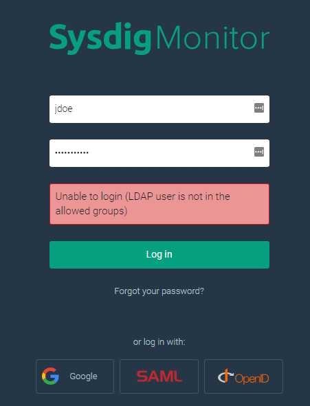
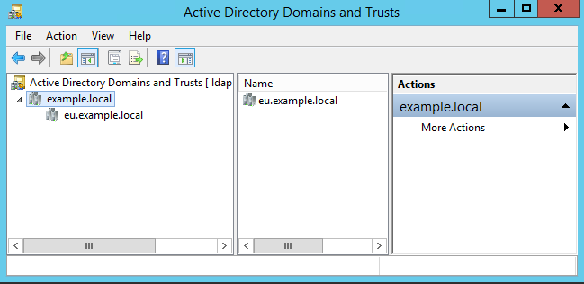

LDAP Authentication Configuration (for Platform v. 963 - 1091)
Note
This article is specific to the LDAP support in the On-Premises Deployments of the Sysdig software platform version 963 and newer.
If you are running version 858 or older, refer to this other article instead.
If you are running versions 890 through 925, refer to this other article instead.
LDAP support in the Sysdig software platform allows user authentication using credentials in a customer’s own directory server.
This document describes how to configure LDAP authentication as well as its LDAP Authentication Configuration (for Platform v. 963 - 1091)#limitations.
LDAP can be complex to configure. Sysdig strongly recommends that you first refine your LDAP configuration in a separate test setup before applying the LDAP settings in your production environment. If you do not have a "development license" for test purposes or have misplaced your license information, contact billing@sysdig.com.
Independent of the LDAP feature, the Sysdig platform ordinarily maintains its own user database to hold not only a username and password hash but also settings for Admin privileges, Sysdig team membership, and a user’s configured Dashboards and Alerts. The LDAP feature provides a means to allow the Sysdig platform to query your separate directory server to validate username/password. Upon successful authentication, a corresponding user record in the Sysdig platform’s user database is automatically created. When the LDAP feature is in use, the user’s directory password is not stored in the Sysdig user database.
Once the LDAP feature is enabled, all normal user authentication will be performed against your configured directory server. Other local, non-LDAP users that were created before LDAP was enabled can still authenticate via LDAP as long as the username portion of their email address in the Sysdig user database matches their LDAP username. For example, consider a user jdoe@example.com who had been a user in the Sysdig environment before LDAP was enabled. Once LDAP is enabled, if a user jdoe exists in the directory server and is able to authenticate successfully via LDAP, they will be permitted to log in to the Sysdig platform as the pre-existing jdoe@example.com user. Any user-specific configuration (Alerts, Dashboards, etc.) that were attached to jdoe@example.com will still be visible to this user. Any password previously set for such a pre-existing user record will not be used for authentication to the Sysdig platform unless the LDAP feature is disabled.
Note: This section is only relevant if you have already been using LDAP support as it existed in Sysdig platform version 858 and earlier and are upgrading to version 963 or newer. If you are configuring LDAP for the first time and are running version 963 or newer, skip this section.
LDAP support in version 858 and older (as described in this article) was configured exclusively via the Replicated console or Kubernetes ConfigMap, depending on your installation type. This required the Sysdig platform to be restarted after any changes to the LDAP settings. When you upgrade your environment to version 963 or newer, your existing settings will be migrated to a new API-based configuration described below. The only LDAP-related setting that remains in the Replicated console is the optional CA certificate for LDAPS connectivity.
For Kubernetes -based installs, you should leave the prior LDAP settings intact to ensure successful migration upon upgrade. But once you are successfully running version 963 or newer, all elements that begin with sysdigcloud.ldap can be removed from your ConfigMap.
In an LDAP-enabled environment, the one user still subject to direct, non-LDAP authentication is the "super" Admin user. Creation of this user is a required initial install step either via the Replicated console (see screenshot below) or Kubernetes ConfigMap element sysdigcloud.default.user .
 |
This user is required and cannot be deleted. This login provides:
A way to access the Sysdig platform when LDAP connectivity is severed.
The first Admin user in the install, essential for assigning Admin rights to other users once they’ve authenticated via LDAP and their user records have been added to the Sysdig user database.
The user whose REST API Token can be used to perform further LDAP configurations via the Sysdig platform API (see below).
Once other LDAP-authenticated users have been promoted to Admins, those Admins can promote other LDAP-authenticated users to Admin, and so on.
The configuration of the LDAP feature can be viewed, updated, and deleted by the "super" Admin via the API endpoint /api/admin/ldap/settings using HTTP methods for GET , POST , and DELETE , respectively.
NOTE: See the REST API page for general info on the API, and the the Locating the "Super" Admin User page for guidance on finding the token for the appropriate "super" Admin user.
A login_config.sh helper script is available in the sysdig-cloud-scripts repository for your use along with an example settings_login_simple.json that can be modified for your environment. Refer to the table below for details on config options. Example command-lines below the table describe how to enable LDAP with these settings.
Section | Setting | Required | Description |
|---|---|---|---|
| | Yes | URL of the directory server for the Sysdig platform to query. An example for cleartext LDAP: ldap://176.16.0.1 For LDAP over SSL/TLS: ldaps://172.16.0.1:636 Note that to use LDAPS, you'll also need to use the Replicated console (or equivalent approach in Kubernetes -based installs) to upload a Certificate Authority (CA) PEM-format certificate that the Sysdig platform will use to validate its SSL/TLS connection to the server. If you have a host with OpenSSL tools installed that can reach the directory server, you can obtain the certificate by running: # openssl s_client -showcerts -connect <server-ip>:636 The command output will typically show the server certificate first and the CA certificate second, both in PEM format. Into a text file, paste the CA certificate portion of the output that looks like: -----BEGIN CERTIFICATE----- [random text...] -----END CERTIFICATE----- Under LDAP CA certificate in the PEM format in the Replicated console, click the "Choose File" button and browse to the file you just created to select and upload it. Note that when you click Save, the Sysdig platform will restart. This is the only setting related to LDAP that requires a platform restart. Note: For environments using self-signed certificates, the |
| | Yes | The distinguished name of a user that the Sysdig platform can authenticate as via LDAP in order to perform further queries about the users attempting to login to the Sysdig platform. Example: cn=Administrator,cn=Users,dc=example,dc=local This setting is required, as the Sysdig platform does not support connection to servers via anonymous bind. |
| | Yes | The password for the |
| | No | The distinguished name for the point in the LDAP tree below which all search queries will begin. Example: dc=example,dc=local |
| | No | Defines whether the Sysdig platform will chase referrals found in LDAP query responses. If not specified, this will be set to |
| | Yes | A relative distinguished name (from the cn=Users If specified as an empty string ( Note that if the cn=Users,dc=example,dc=local |
| | Yes | An LDAP search filter (in RFC2254 format) that the Sysdig platform will use in constructing the query to identify the user record. The marker token (&(objectClass=organizationalPerson)(sAMAccountName={0})) |
To use the helper script, modify the env.sh to set the required values for API_TOKEN and URL for your environment. Once set, invoking login_config.sh with no options will print the current configuration. If you were running Sysdig platform version 858 or older and have just upgraded to version 925 or newer, you will see your migrated settings. Otherwise, the LDAP feature will start out disabled ( "enableLdapAuthentication": false ) and other configuration settings will not be shown.
# ./login_config.sh
{
"ldapSettings": {
"enableLdapAuthentication": false,
"version": 1
}
}Using the guidance in the settings table above, modify the settings_login_simple.json as necessary to allow for connectivity and querying of users in your directory server. To apply the new LDAP settings, invoke login_config.sh with the -s option and specify the filename containing the JSON config, . If successful, the applied configuration will be echoed back by the API.
# ./login_config.sh -s settings_login_simple.json
{"ldapSettings":{"version":2,"loginConnectionSettings":{"server":"ldap://172.16.0.1","rootDn":"dc=example,dc=local","managerDn":"cn=Administrator,cn=Users,dc=example,dc=local","managerPassword":"myMgrPassword","referral":"IGNORE"},"loginFilter":{"searchBase":"cn=Users","searchFilter":"(&(objectClass=organizationalPerson)(sAMAccountName={0}))"},"enableLdapAuthentication":true,"allowApiUserCreation":false}}Using the specific example settings_login_simple.json and the minimal Active Directory configuration in the screenshot below, login to the Sysdig platform would now be permitted for a user jdoe that has distinguishedName :
CN=John Doe,CN=Users,DC=example,DC=local
 |
To delete LDAP settings, invoke login_config.sh with the -d option. This should be used with caution, as this will prevent all LDAP users from being able to login to the Sysdig platform!
# ./login_config.sh -d
{"ldapSettings":{"version":3,"enableLdapAuthentication":false}}The LDAP feature as it existed in version 858 and earlier included optional additional settings that, when specified, ensured that authenticated users were also members of one or more groups before permitting them to login to the Sysdig platform. These settings are documented here for the benefit of those who used these settings in the past and have had their settings migrated to the newer API-based configuration. See below for details on how to use the searchFilter instead to achieve equivalent functionality.
For use with the login_config.sh helper script, an example settings_login_group_deprecated.json is provided that can be modified for your environment based on the table below. Example command-lines are shown below the table.
Section | Setting | Required | Description |
|---|---|---|---|
| | No | A relative distinguished name (from the ou=Planets |
| | No | An LDAP search filter (in RFC2254 format) that the Sysdig platform will use in constructing the query to identify a group to which the user must belong. An example that only permits users that are in the (&(cn=Mars)(objectclass=group)) If this setting is left blank, group membership is not required, and hence any user that successfully authenticates via LDAP using only username/password will be permitted to login to the Sysdig platform. |
| | No | An LDAP search filter (in RFC2254 format) that the Sysdig platform will use to determine group membership. If no setting is specified, the following default filter is applied, which should work for most environments: (| (member={0}) (uniqueMember={0}) (memberUid={1})) |
Using the specific example settings_login_group_deprecated.json and the minimal Active Directory configuration in the screenshot below, login to the Sysdig platform would be permitted for this user who belongs to the Mars group.
 |
But our previous jdoe user who is not a member would be prevented from logging in.
|  |
To simplify your configuration and avoid use of these deprecated options, an equivalent configuration can be achieved by making the group membership part of the searchFilter :
"searchFilter": "(&(memberOf=CN=Mars,OU=Planets,DC=example,DC=local)(objectClass=organizationalPerson)(sAMAccountName={0}))"See the example settings_login_group.json for an updated configuration that can be compared side-by-side with settings_login_group_deprecated.json .
Data about your users that need to access the Sysdig platform may be stored across many directory servers in your environment. As the Sysdig platform is only able to query one LDAP server endpoint, you would need to take extra steps to ensure successful authentication for such users.
The simplest approach to achieve this is to query against a Global Catalog. As the Global Catalog stores a copy of all Active Directory objects in a forest, this provides a fast and convenient target for the Sysdig platform to find all users that may need to authenticate. Since queries against the Global Catalog are also performed via LDAP, you simply need to ensure your LDAP configuration specifies the appropriate address and TCP port for the Global Catalog, e.g. ldap://176.16.0.1:3268 for cleartext LDAP or ldaps://172.16.0.1:3269 for LDAP over SSL/TLS. If querying against a Global Catalog, the referral option of the Sysdig platform's LDAP configuration can remain at its default setting of "IGNORE" .
If a Global Catalog is not available, another approach is to leverage referral chasing. Such chasing depends on complex interplay of configuration settings, DNS resolution, and network connectivity to multiple servers. If you require this option, carefully read the tips in this section and validate your configuration in a test environment before attempting its use in production. Contact Sysdig support for assistance as necessary.
For our example configuration, we've added another Domain Controller to our environment that holds users a separate set of users for the child domain eu.example.local .
|  |
We'd like to permit login for a user " eurodude " in the child domain. This user has distinguishedName :
CN=Euro Dude,CN=Users,DC=eu,DC=example,DC=local
In the example configuration settings_login_referral_follow.json shown below, the Sysdig platform still begins its LDAP queries at the same top-level server target. However, the referrral option is set to "FOLLOW" , which will cause the Sysdig platform to perform subsequent queries if a query returns one or more referrals.
{
"loginConnectionSettings": {
"server": "ldap://172.16.0.1",
"managerDn": "cn=Administrator,cn=Users,dc=example,dc=local",
"managerPassword": "myMgrPassword",
"referral": "FOLLOW"
},
"loginFilter": {
"searchBase": "dc=example,dc=local",
"searchFilter": "(&(objectClass=organizationalPerson)(sAMAccountName={0}))"
},
"enableLdapAuthentication": true
}Note also how in this case the rootDn option is left unspecified and the searchBase is set to the distinguished name of the top-level domain. This is necessary to ensure the scope of the chased referral queries will include the child domain. If rootDn and searchBase had been left as they were set in the settings_login_simple.json example, the initial query would have been targeted only within cn=Users,dc=example,dc=local and hence the referral would never have been returned by the top-level server.
Note these other caveats of referral chasing in the Sysdig platform:
Referrals may only be successfully chased to child domains. If referrals point to parallel domains (e.g. for our example,
dc=adjacent,dc=local) the queries will not succeed and users stored in the directory servers for such domains will not be able to authenticate.The LDAP library used by the Sysdig platform does not log information about each referral it attempts to chase. Therefore, if you enable referral chasing, it is important that you understand the server targets that may be chased in your environment and ensure the network connectivity (routing/firewalls) will permit the Sysdig platform to query these server targets. If LDAP queries are failing due to a network connectivity issue, this will typically be accompanied by delays during Sysdig user logins of approximately 30 seconds followed by a login failure with an
HTTP 504error message shown in the login screen. If this occurs, contact Sysdig support for assistance.
To test the login configuration, the "super" Admin user can confirm if a particular user would be permitted to login given current LDAP login connection settings. To do this, perform an HTTP GET to the API endpoint /api/admin/ldap/settings/verify/USERNAME . A verify_user.sh helper script is provided to easily perform this. If invoked with the -u option and a username, and the user's login would be successful, it will return the user's information from the directory.
# ./verify_user.sh -u jdoe
{"element":"uSNCreated=12799, countryCode=0, badPwdCount=0, whenChanged=20180406232737.0Z, objectClass=top, primaryGroupID=513, givenName=John, objectGUID=..., objectSid=..., instanceType=4, whenCreated=20180406220651.0Z, dSCorePropagationData=16010101000000.0Z, sn=Doe, userAccountControl=66048, lastLogonTimestamp=131675308573317669, cn=John Doe, codePage=0, accountExpires=9223372036854775807, sAMAccountName=jdoe, sAMAccountType=805306368, userPrincipalName=jdoe@example.local, displayName=John Doe, pwdLastSet=131675260113435098, lastLogon=131682933890462204, name=John Doe, objectCategory=CN=Person,CN=Schema,CN=Configuration,DC=example,DC=local, distinguishedName=CN=John Doe,CN=Users,DC=example,DC=local, lastLogoff=0, memberOf=CN=Sysdig Viewers,CN=Users,DC=example,DC=local, logonCount=0, uSNChanged=12986"}If the user would not be able to login, an error message will be returned.
# ./verify_user.sh -u nothere Could not verify user "nothere". Check LDAP login config settings and/or system log.
The default behavior of the LDAP feature is to create a new record in the Sysdig user database when a user authenticates successfully via LDAP for the first time. However, it may be desirable to add such user records in advance of their first login, such as if you wish to use automation to change user permissions, assign team membership, or pre-populate Dashboard/Alert configurations. A create_user.sh helper script is available in the sysdig-cloud-scripts repository to create such user records via the API. This script can also be used to enable/disable this functionality in the Sysdig platform. See the README for details.
Additional details regarding this type of user creation in conjunction with LDAP authentication:
This method allows creation of any username, even if it doesn't currently exist in the directory that is queried via LDAP.
When LDAP authentication is enabled, such users can be created with a simple username (e.g.
jdoe) or with an email-style postfix (as is typical for non-LDAP Sysdig user, e.g.jdoe@example.com). In this latter case only the username portion (jdoe) is used when the Sysdig platform is performing an LDAP query during attempted login.While the
passwordmust be included in the config youPOSTto create the user, it is not used by the Sysdig platform when LDAP is enabled, as authentication will always be performed via LDAP. For this same reason, if a user has been created in this way, they will not be able to login unless there is a matching user in the directory that is queried via LDAP.The
firstNameandlastNamevalues as specified in the example are optional and independent from any equivalent name settings in the directory that is queried via LDAP.
LDAP support has been tested with Active Directory in Windows Server 2012 R2. It may work with AD versions that ship with other versions of Windows, or other directory servers that use the LDAP protocol. If you are intending to use LDAP with something other than Active Directory, please contact Sysdig Support.
The LDAP feature is only present in Sysdig software platform installs (not the SaaS version).
Only one LDAP config can exist per deployment (i.e. the platform can only query one directory server endpoint).
Because the Sysdig software platform is based on the same technology as the SaaS-based Sysdig service, it theoretically supports the configuration of multiple “customers” using the same install. However, the multi-customer option is not supported when the LDAP feature is enabled.
When LDAP support is enabled, adding users via email "invites" is not possible.
LDAP authentication for directory usernames that begin or end with a space character (e.g.
" jdoe"or"jdoe ") are not supported.Configuration entries that contain special characters (for instance, a
managerPasswordthat contains a backslash character) are supported, but note that you will need to perform proper JSON escaping in the configuration youPOSTto the API. If you attempt to post invalid JSON, the helper scripts will return an error message. If this occurs, you can use tools such as JSONLint to narrow down the source of the problem and/or JSON String Escape to learn how to properly escape your text.The LDAP feature does not attempt any ongoing “sync” back from the Sysdig platform user database to the directory server. Note how this impacts the following:
If a user is deleted from the directory server, their user record will remain in the Sysdig user database until a Sysdig Admin deletes it. Of course, that user will not be able to login since they will no longer be able to authenticate successfully via LDAP.
If an Admin deletes a user from the Sysdig user database, but the user can still authenticate successfully via LDAP, their Sysdig user record will be recreated if they login again via LDAP.
If a person’s username should change in the directory server (e.g. the value for
sAMAccountNamein our examples above), the next time they login, a new user record will be created for them in the Sysdig user database. Settings they previously had in the Sysdig platform such as Admin rights and Alerts/Dashboard configurations will not be present for this recreated user.
Other LDAP-centric functionality that is not currently supported (not an exhaustive list):
Mapping a user in the directory server to the Sysdig "super" Admin (such as to avoid the need to configure the this "super" Admin user).
Session expiry based on configuration in the directory server (such as to set a user account to only be valid until a certain date).
Login policies based on configuration in the directory server (such as to restrict login to certain hours).
User timeout functionality (such as to remove a user from the Sysdig user database if they have not logged in for a certain amount of time).
See General LDAP Tips for more guidance to assist with debugging or perfecting your LDAP configuration.
Introduction
Summary of Functionality
Upgrades - Migration of Settings
Prerequisite: The "Super" Admin user
Configuration of LDAP Authentication
Group Membership Configuration (deprecated)
Mutli-Server Directories
Testing User Login
Creating LDAP Users Before They Login
Limitations and Caveats